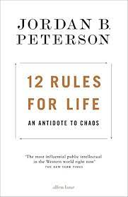

An interesting fact about me is that I know way more than you would expect about the neurological structures of lobsters, as well as why you want might to know that sort of information.
I think most of my love of this book comes from my love of the author, I follow Dr. Peterson closely and have been for several years now. Besides that though, this is a self help book that actually works. It encourages you to take personal responsibility for your life, and all that entails, like taking care of yourself physically and spiritually, as well as in a social sense.
